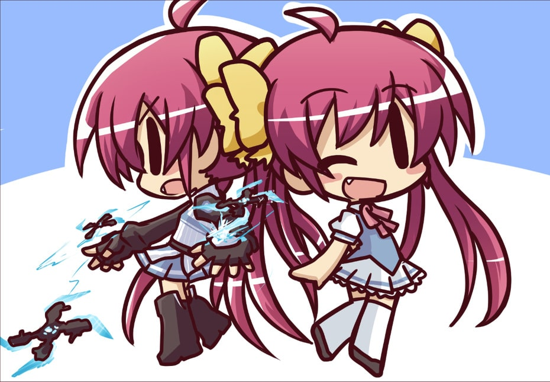
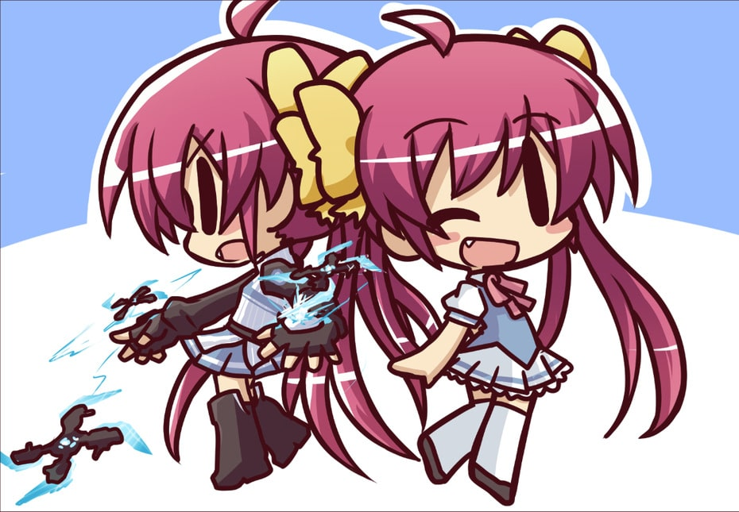
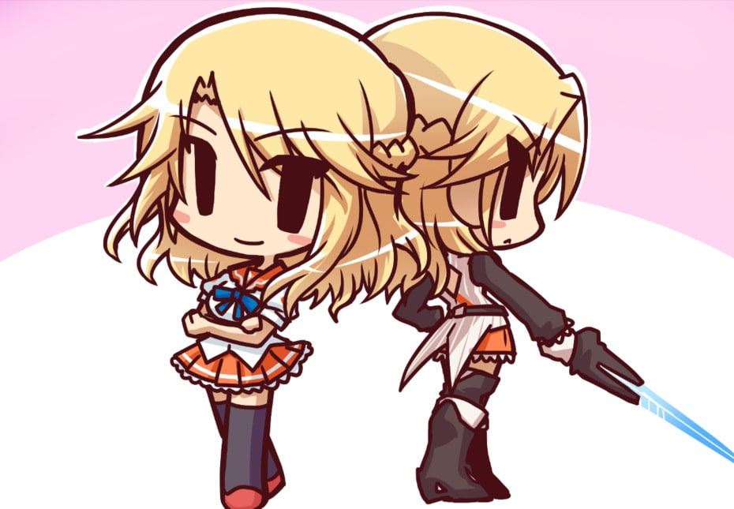
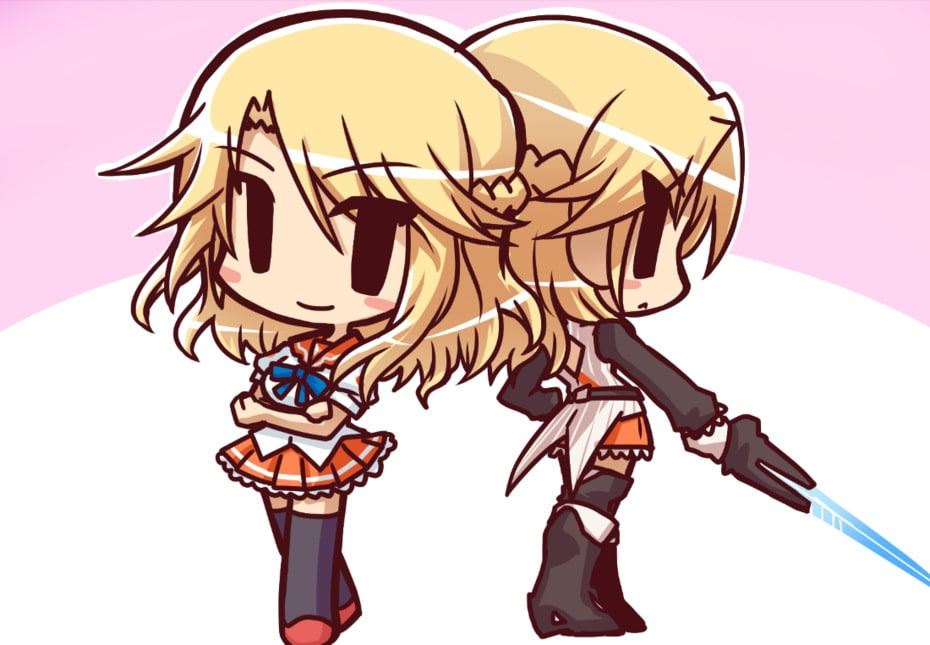

 


MOEMANGA JAPANESE LEARNING
- ぴちぴち [pichi pichi] - young and lively.
- 高校2年生 [こうこうにねんせい (koukou ninensei)] - second grade of high school or 11th grade.
- 人知れず [ひとしれず (hitoshirezu)] - to do something in secret and unnoticed by many or all.
- 戦う [たたかう (tatakau)] - to battle or fight.
- ~こと~ [koto] - means "also known as".
- 優しい [やさしい (yasashii)] - kind and generous.
- しっかり者 [しっかりもの (shikkari mono)] - a responsible person.
- みんなに好かれる [みんなにすかれる (minnani sukareru)] - to be liked by all.
- よく [yoku] - often.
- 芯はしっかりしている [しんはしっかりしている (shinwa shikkari shiteiru)] - to be determined or have a strong heart.
- おっぱい [oppai] - women's chest.
- 大きい [おおきい (ookii)] - large.
- いじられる [ijirareru] - to be made fun of.